- Es una aplicación de juego educativa.
- Su objetivo es fortalecer la alfabetización sobre la biodiversidad de la fauna y flora de Colombia.
- Este juego permite a los infantes aprender contenidos y estar motivados al mismo tiempo, lo que puede resultar en actitudes favorables hacia el medioambiente.
 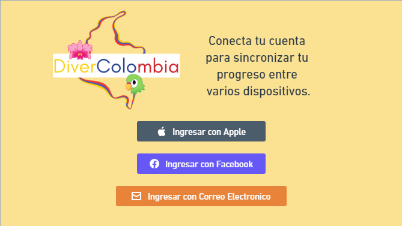
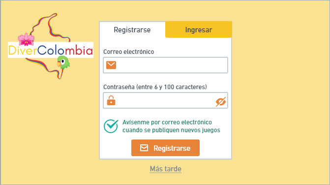
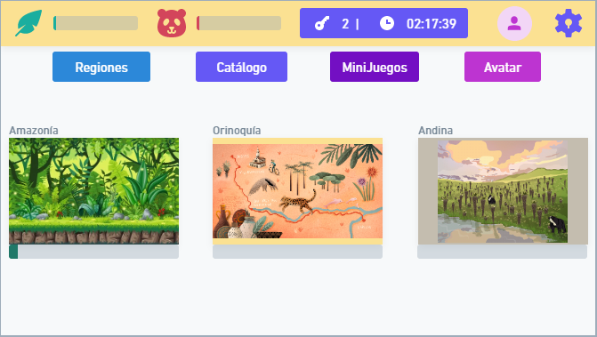
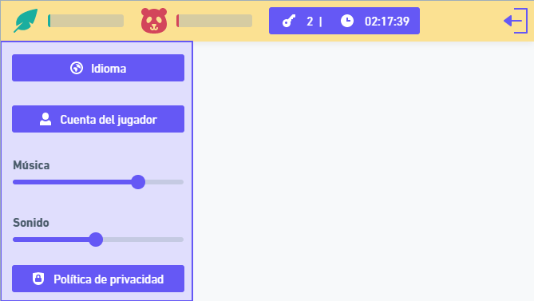
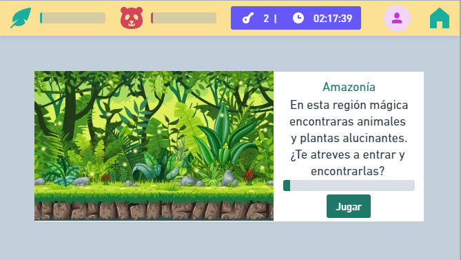
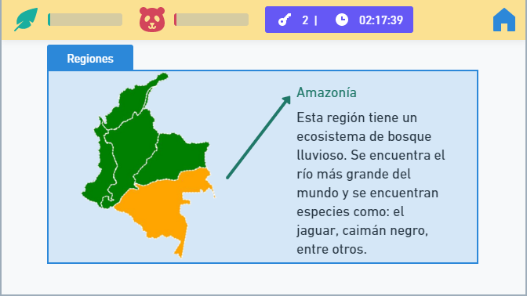
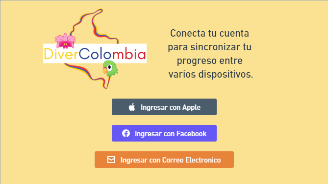
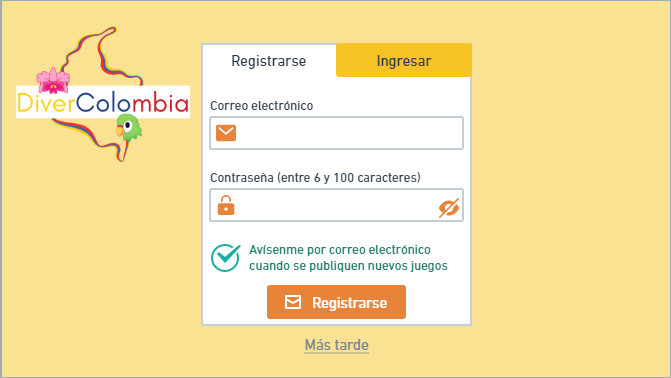
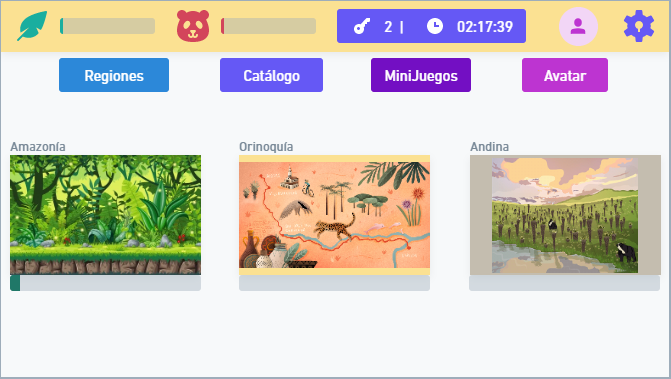
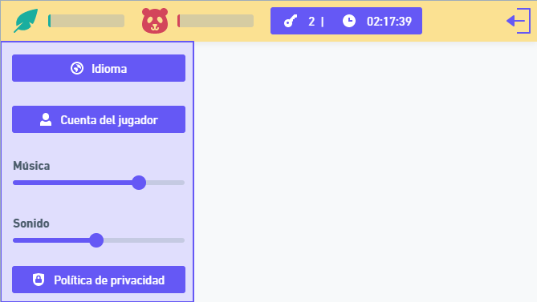
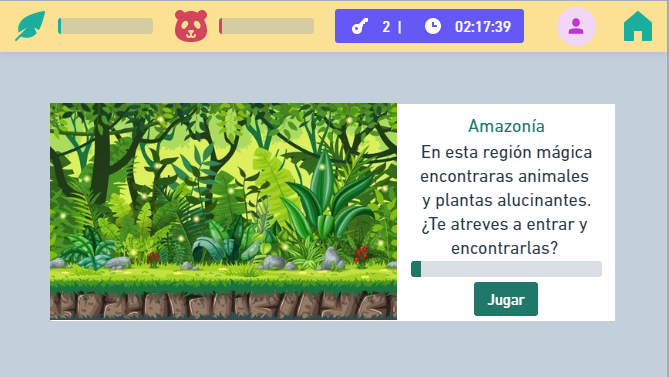
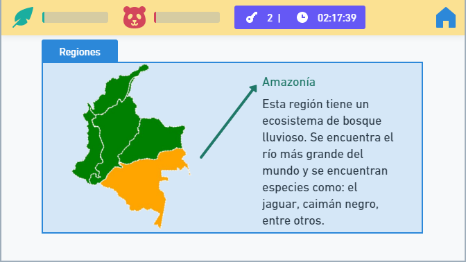